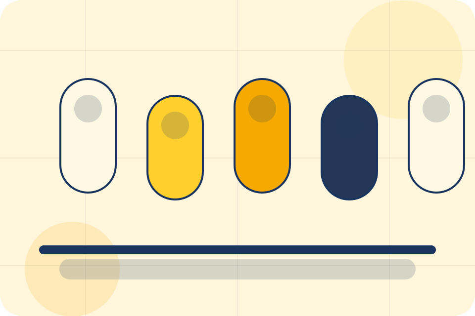
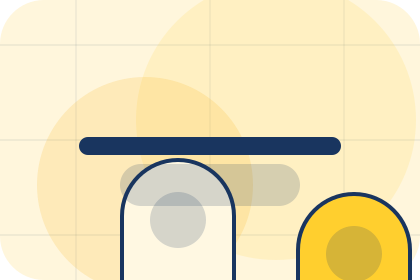
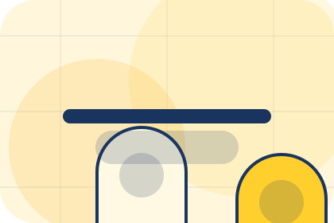
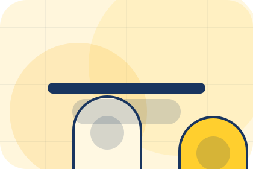
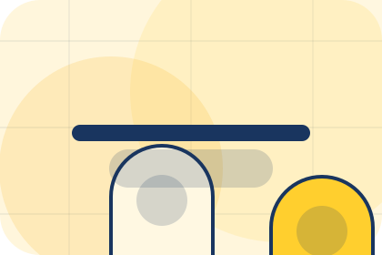
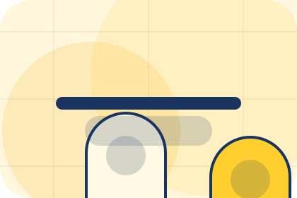
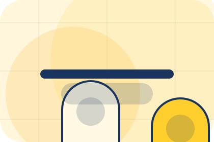
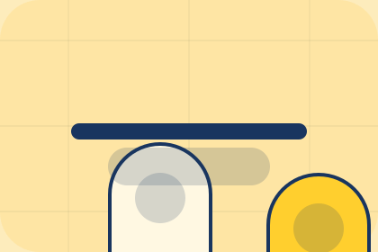

Method / 01
Method by Luma
Method shaped for wellness, personal care & lifestyle services decisions.
Method opens as a clear wellness decision hub: what Luma offers, who it helps, why it matters, and which route to take first.
The first screen combines positioning, proof, primary action, and fast internal navigation, so people can act immediately or compare the rest of the method route with context.
Clear intakeHuman follow-upPractical reassurance
Product routine hero
Choose a starting profile
Select the closest route and Luma keeps the next step, proof, and follow-up expectation aligned with personal improvement and reassurance.

Method / 02
Assessment
Assessment adds care context to the method route, using the routine commerce shelf structure to support personal improvement and reassurance before visitors choose a next step.
Luma uses supplement capsule cards and focused copy to make the decision easier to scan, aligning the section with personal improvement and reassurance rather than filling space.
Explore MethodLuma structures assessment around context, judgment, and a clear next route so visitors can compare the block quickly before they book a consultation.
Book ConsultationMethod / 03
Plan
Plan makes commercial comparison easier by showing fit, scope, and terms before wellness visitors ask for the next step.
The layout keeps price-sensitive decisions honest: it separates starting scope, fuller delivery, and ongoing support so the visitor can ask a sharper question.
Explore Method

Fit
Who the offer is for, which scope it suits, and when a different route may be better.
Method / 04
Routine
Routine adds care context to the method route, using the routine commerce shelf structure to support personal improvement and reassurance before visitors choose a next step.
Luma uses supplement capsule cards and focused copy to make the decision easier to scan, aligning the section with personal improvement and reassurance rather than filling space.
Explore MethodContext
Routine gives the page a specific angle instead of repeating the navigation label.

Judgment
The supplement capsule cards show what to compare, what to avoid, and what matters most for wellness, personal care & lifestyle services visitors.
Direction
The final cue points to a useful internal route so the section keeps the journey moving.
Method / 05
Session
Session adds care context to the method route, using the routine commerce shelf structure to support personal improvement and reassurance before visitors choose a next step.
Luma uses supplement capsule cards and focused copy to make the decision easier to scan, aligning the section with personal improvement and reassurance rather than filling space.
Explore MethodSession gives the page a specific angle instead of repeating the navigation label.
The supplement capsule cards show what to compare, what to avoid, and what matters most for wellness, personal care & lifestyle services visitors.
The final cue points to a useful internal route so the section keeps the journey moving.
Method / 06
Support
Support explains the practical scope, best-fit situations, and expected outcome so wellness visitors can compare options without decoding jargon.
The section keeps the offer concrete: what is included, who it is best for, what decision it supports, and which linked route gives the deeper detail.
Open ContactBest Fit
Who should use support and when it belongs in the method journey.
What Changes
The practical benefit visitors should expect after choosing this route.
Deeper Route
Where to compare details, pricing, support, or contact options before committing.
Method / 07
Progress
Progress adds care context to the method route, using the routine commerce shelf structure to support personal improvement and reassurance before visitors choose a next step.
Luma uses supplement capsule cards and focused copy to make the decision easier to scan, aligning the section with personal improvement and reassurance rather than filling space.
Explore MethodContext
Progress gives the page a specific angle instead of repeating the navigation label.
Judgment
The supplement capsule cards show what to compare, what to avoid, and what matters most for wellness, personal care & lifestyle services visitors.
Direction
The final cue points to a useful internal route so the section keeps the journey moving.
Method / 08
Adjustments
Adjustments adds care context to the method route, using the routine commerce shelf structure to support personal improvement and reassurance before visitors choose a next step.
Luma uses supplement capsule cards and focused copy to make the decision easier to scan, aligning the section with personal improvement and reassurance rather than filling space.
Explore Method

Context
Adjustments gives the page a specific angle instead of repeating the navigation label.
Method / 09
Maintenance
Maintenance explains the operating sequence so visitors can see how the first request becomes a clear recommendation and follow-up.
The steps are written from the visitor side: what they do first, what Luma clarifies, what they receive, and how support continues.
Explore MethodStart
How visitors begin this route and what detail is useful at the first step.
Clarify
What Luma reviews, filters, or explains before recommending the next move.

Continue
What the visitor receives afterward, including support, proof, or a handoff to the next page.
Method / 10
Book Consultation
Luma closes the method route with a clear action, a quick reminder of the value, and a low-friction way to book a consultation.
Visitors who are ready can use the primary action. Visitors who are still comparing can scan the section links, proof, and support routes before they book a consultation.
Book ConsultationThe final block keeps the choice simple: act now, compare one more proof route, or send enough detail for a focused response.
Book Consultationpersonal improvement and reassurance
Book Consultation
A routine-first wellness shop with offer strip, product education, rounded capsules, and evidence-led reassurance. Method ends with a direct path to book a consultation, plus enough context for visitors who still need to compare.

Book ConsultationNotes
Information is provided for planning and should be reviewed for the final client, location, and operating rules.